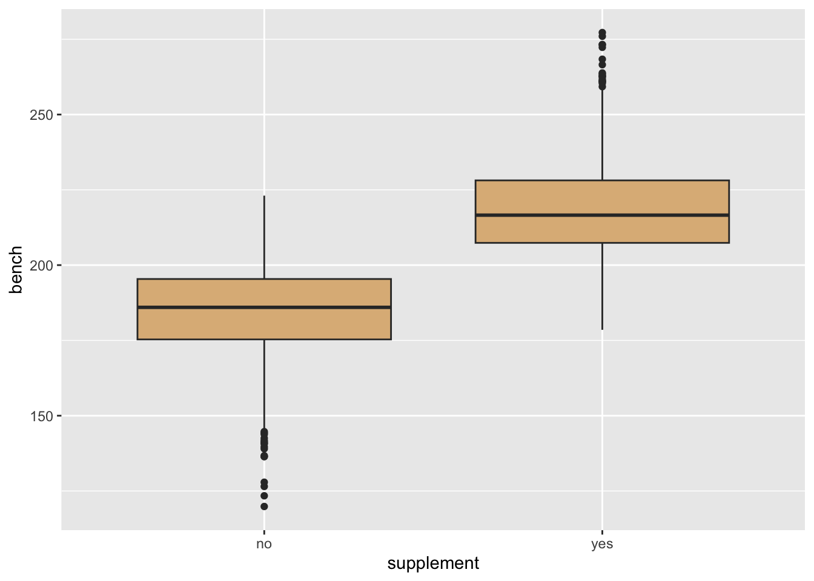
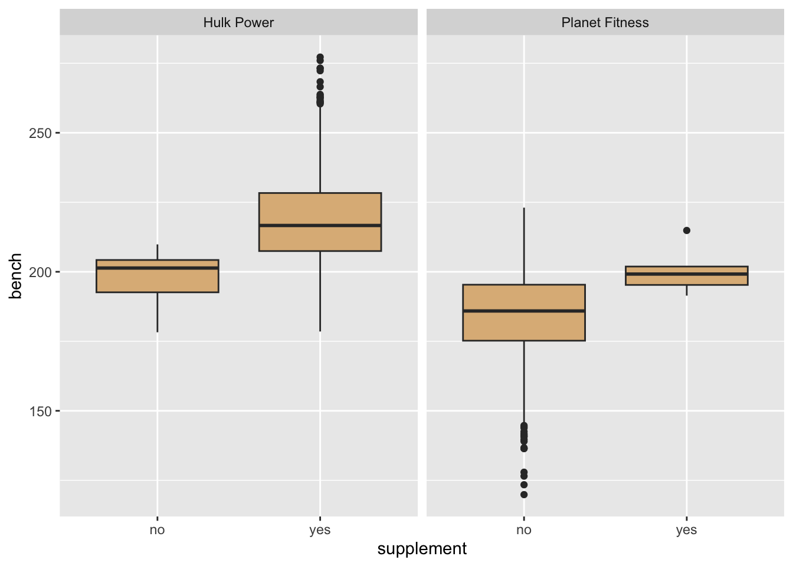

library(tidyverse)
library(LSTbook)CSC 303 Finale
Setup
Attach these packages:
Simulation Models
Suppose that some exercise physiologists are researching whether taking a certain vitamin supplement makes people stronger. Unknown to them, the supplement changes the amount a person can bench-press by:
supplement_effect <- 2They do an observational study involving a large number of people:
n <- 2000for each person they record whether not the person takes the supplement, and also how much (in pounds) the person can bench-press. they also happen to record whether the person works out a the Hulk Power Gym or at Planet Fitness.
Here is a simulation-maker for the situation:
vitamin_sim <- datasim_make(
.m <- rnorm(n, mean = 0, sd = 100),
.w <- bernoulli(n, logodds = .m),
workout <- ifelse(
.w == 1,
"Hulk Power",
"Planet Fitness"
),
.s <- bernoulli(n, logodds = .m),
supplement <- ifelse(
.s == 1,
"yes",
"no"
),
bench <- 200 + .m / 5 + supplement_effect * .s + rnorm(n, sd = 10)
)When the statisticians take their sample of individuals, it is like sampling from this “model”:
vitamin_data <- vitamin_sim %>%
take_sample(n = n)Here is a little bit of their sample:
vitamin_data %>%
head(n = 10) %>%
knitr::kable()| workout | supplement | bench |
|---|---|---|
| Hulk Power | yes | 213.4573 |
| Hulk Power | yes | 208.5149 |
| Planet Fitness | no | 179.3582 |
| Planet Fitness | no | 203.6309 |
| Planet Fitness | no | 136.7211 |
| Hulk Power | yes | 215.3856 |
| Hulk Power | yes | 215.0258 |
| Planet Fitness | no | 187.2534 |
| Hulk Power | yes | 245.3434 |
| Hulk Power | yes | 201.7393 |
A Bad Analysis: Failure to Control
Suppose statisticians do not control for the possible confounding variable. Maybe they make graphs like this one:
vitamin_data %>%
ggplot(aes(x = supplement, y = bench)) +
geom_boxplot(fill = "burlywood")
And they make linear models like this one:
mod <- lm(
bench ~ supplement,
data = vitamin_data
)
summary(mod)
Call:
lm(formula = bench ~ supplement, data = vitamin_data)
Residuals:
Min 1Q Median 3Q Max
-64.437 -10.352 -0.194 10.609 58.741
Coefficients:
Estimate Std. Error t value Pr(>|t|)
(Intercept) 184.2935 0.4865 378.82 <2e-16 ***
supplementyes 34.1853 0.7040 48.56 <2e-16 ***
---
Signif. codes: 0 '***' 0.001 '**' 0.01 '*' 0.05 '.' 0.1 ' ' 1
Residual standard error: 15.73 on 1998 degrees of freedom
Multiple R-squared: 0.5413, Adjusted R-squared: 0.5411
F-statistic: 2358 on 1 and 1998 DF, p-value: < 2.2e-16confint(mod) 2.5 % 97.5 %
(Intercept) 183.33945 185.24763
supplementyes 32.80463 35.56606Their work gives the (very wrong) impression that taking vitamins helps a lot.
Controlling
Now suppose they exercise their common sense, and control for the possible confounder workout
In graphs, they might do this/:
vitamin_data %>%
ggplot(aes(x = supplement, y = bench)) +
geom_boxplot(fill = "burlywood") +
facet_grid(. ~ workout)
With linear models, you control by adding in the possible confounder:
mod2 <- lm(bench ~ supplement + workout, data = vitamin_data)
summary(mod2)
Call:
lm(formula = bench ~ supplement + workout, data = vitamin_data)
Residuals:
Min 1Q Median 3Q Max
-64.317 -10.316 -0.159 10.526 58.643
Coefficients:
Estimate Std. Error t value Pr(>|t|)
(Intercept) 199.764 4.201 47.556 < 2e-16 ***
supplementyes 18.813 4.205 4.474 8.11e-06 ***
workoutPlanet Fitness -15.589 4.205 -3.708 0.000215 ***
---
Signif. codes: 0 '***' 0.001 '**' 0.01 '*' 0.05 '.' 0.1 ' ' 1
Residual standard error: 15.68 on 1997 degrees of freedom
Multiple R-squared: 0.5444, Adjusted R-squared: 0.544
F-statistic: 1193 on 2 and 1997 DF, p-value: < 2.2e-16confint(mod2) 2.5 % 97.5 %
(Intercept) 191.52562 208.001515
supplementyes 10.56655 27.059981
workoutPlanet Fitness -23.83536 -7.343379But:
vitamin_data %>%
group_by(workout, supplement) %>%
summarize(n = n()) %>%
knitr::kable()`summarise()` has grouped output by 'workout'. You can override using the
`.groups` argument.| workout | supplement | n |
|---|---|---|
| Hulk Power | no | 8 |
| Hulk Power | yes | 949 |
| Planet Fitness | no | 1037 |
| Planet Fitness | yes | 6 |
Experiments are Best
Suppose they decide to do an experiment:
vitamin_exp <- vitamin_sim %>%
datasim_intervene(
.s <- bernoulli(n, prob = 0.5),
.w <- bernoulli(n, prob = 0.5)
)
vitamin_exp_data <- vitamin_exp %>%
take_sample(n = n)mod3 <- lm(bench ~ supplement + workout, data = vitamin_exp_data)
summary(mod3)
Call:
lm(formula = bench ~ supplement + workout, data = vitamin_exp_data)
Residuals:
Min 1Q Median 3Q Max
-73.903 -16.039 -0.445 15.410 85.174
Coefficients:
Estimate Std. Error t value Pr(>|t|)
(Intercept) 200.2444 0.8848 226.305 < 2e-16 ***
supplementyes 2.8773 1.0213 2.817 0.00489 **
workoutPlanet Fitness -1.4010 1.0211 -1.372 0.17018
---
Signif. codes: 0 '***' 0.001 '**' 0.01 '*' 0.05 '.' 0.1 ' ' 1
Residual standard error: 22.83 on 1997 degrees of freedom
Multiple R-squared: 0.004829, Adjusted R-squared: 0.003833
F-statistic: 4.845 on 2 and 1997 DF, p-value: 0.007957confint(mod3) 2.5 % 97.5 %
(Intercept) 198.5090613 201.9796775
supplementyes 0.8743494 4.8801711
workoutPlanet Fitness -3.4034964 0.6014499